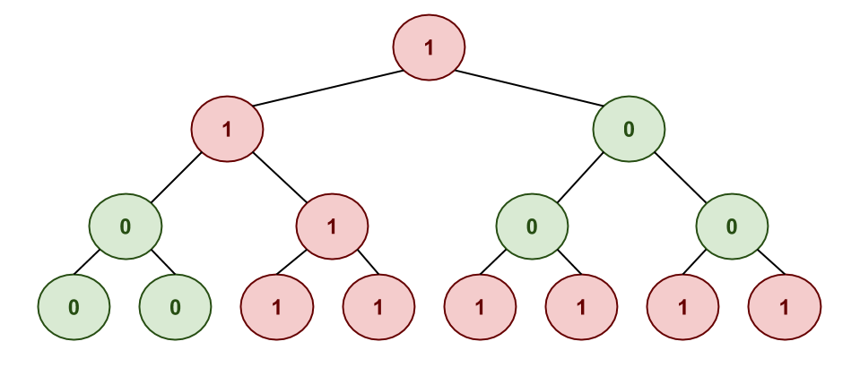

Even though it is June, it is never too early to break out the Christmas decorations and get ready for the the best holiday of the year 1. In the spirit of bringing the joy of Computer Science to everyone, the instructor has decided to have his kids make their own binary christmas tree:

As can be seen, a BCT is simply a binary tree that has red 1's and
green 0's. Besides looking beautiful, this festive decoration also
serves as a learning tool!
For instance, each path downwards from any node in the tree will lead to a binary string of digits. Taking advantage of this property, the instructor plays the following game with his children:
Given a binary christmas tree, how many paths are there in the BCT that form the binary representation of a particular integer. Note, a path can begin from any node and always travels downwards (from parent to children).
For example, given the tree above, the children would be ask to determine
how many paths in the binary christmas tree yield the number 3. Since
3 is 11 in binary, there are 4 different paths in the binary
christmas tree with this sequence of nodes.
The children do not like this game and want daddy's students to once again help them answer these questions in a time efficient manner.
Input¶
You will be given a series of integer targets and binary christmas trees in the form:
TARGET BINARY_CHRISTMAS_TREES
Note, the binary christmas trees are provided in breadth-first order.
Example Input¶
3 110010000111111
9 110010000111111
2 110010000111111
Output¶
For each target and binary christmas tree, you are to determine how many paths in the binary chistmas tree form the target integer in binary and display this result in the following format:
Paths that form $TARGET in binary ($BINARY): $PATHS
Example Output¶
Paths that form 3 in binary (11): 4
Paths that form 9 in binary (1001): 4
Paths that form 2 in binary (10): 2
Algorithmic Complexity¶
For each input test case, your solution should have the following targets:
| Time Complexity | O(N), where N is the number of nodes in the binary christmas tree. |
| Space Complexity | O(N), where N is the number of nodes in the binary christmas tree. |
Your solution may be below the targets, but it should not exceed them.
Submission¶
To submit your work, follow the same procedure you used for Reading 01:
$ cd path/to/cse-30872-su26-assignments # Go to assignments repository
$ git switch master # Make sure we are on master
$ git pull --rebase # Pull any changes from GitHub
$ git switch -c challenge14 # Create and checkout challenge14 branch
$ $EDITOR challenge14/program.cpp # Edit your code
$ git add challenge14/program.cpp # Stage your changes
$ git commit -m "Challenge 14: Code" # Commit your changes
$ git push -u origin challenge14 # Send changes to GitHub
To check your code, you can use the .scripts/check.py script or curl:
$ .scripts/check.py
Checking challenge14 program.cpp ...
Result Success
Time 0.06
--------------------
Score 6.00 / 6.00
Grade 1.00 / 1.00
$ curl -F source=@challenge14/program.cpp https://dredd.h4x0r.space/code/cse-30872-su26/challenge14
{"result": "Success", "score": 6, "time": 0.06394362449645996, "value": 6, "status": 0}
Acknowledgments¶
If you collaborated with any other students or received help from AI tools on this assignment, please described this support in the description of your Pull Request.
Graders¶
Once you have committed your work and pushed it to GitHub, remember to create a pull request and assign it to the instructor.
-
This made more sense when I taught this course in the Fall... ↩